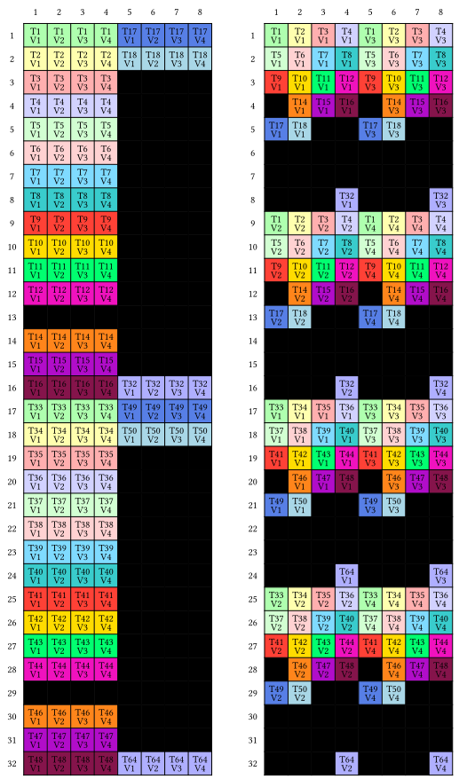

Tensor Cores
Tensor cores are specialized hardware accelerators designed to optimize matrix operations, which are crucial for deep learning and artificial intelligence algorithms.
Enabling tensor cores can be as straightforward as modifying a single line of code in the existing matmul_kernel function:
mma = make_tiled_mma(MMAOP_8x8x4_F32F16F16F32_NT(),
atom_layout,
tiler)The NT in MMAOP8x8x4F32F16F16F32_NT indicates that A is in M-major order and B is in N-major order.
Let's explore a minimal example
mma = make_tiled_mma(MMAOP_16x8x8_F32TF32TF32F32_TN())
print_typst(mma)
At first glance, the diagram may seem complex, but the concept is straightforward: the threads collective load data from matrices A and B according to the specified layout. During the matrix multiply-accumulate (MMA) computation, data is internally shared among threads—a process that is not transparent to the user. Once the computation is complete, each thread stores the results as dictated by the layout of matrix C shown in the illustration.
function matmul_kernel(A, sA_layout, copy_A,
B, sB_layout, copy_B,
C, mma)
sA = MoYeSharedArray(eltype(A), sA_layout)
sB = MoYeSharedArray(eltype(B), sB_layout)
mA = MoYeArray(A)
mB = MoYeArray(B)
mC = MoYeArray(C)
bM = size(sA_layout, 1)
bN = size(sB_layout, 1)
bK = size(sB_layout, 2)
gA = @tile mA (bM, bK) (blockIdx().x, :)
gB = @tile mB (bN, bK) (blockIdx().y, :)
gC = @tile mC (bM, bN) (blockIdx().x, blockIdx().y)
# copy partition
thr_copy_a = get_slice(copy_A, threadIdx().x)
tAgA = partition_S(thr_copy_a, gA) # (CPY, CPY_M, CPY_K, k)
tAsA = partition_D(thr_copy_a, sA) # (CPY, CPY_M, CPY_K)
thr_copy_b = get_slice(copy_B, threadIdx().x)
tBgB = partition_S(thr_copy_b, gB) # (CPY, CPY_N, CPY_K, k)
tBsB = partition_D(thr_copy_b, sB) # (CPY, CPY_N, CPY_K)
# mma partition
thr_mma = get_slice(mma, threadIdx().x)
tCsA = partition_A(thr_mma, sA) # (MMA, MMA_M, MMA_K)
tCsB = partition_B(thr_mma, sB) # (MMA, MMA_M, MMA_K)
tCgC = partition_C(thr_mma, gC) # (MMA, MMA_M, MMA_N)
tCrA = make_fragment_A(thr_mma, tCsA) # (MMA, MMA_M, MMA_K)
tCrB = make_fragment_B(thr_mma, tCsB)
tCrC = make_fragment_C(thr_mma, tCgC)
zeros!(tCrC)
# copy from global to shared
copyto!(copy_A, tAsA, view(tAgA, :, :, :, _1))
copyto!(copy_B, tBsB, view(tBgB, :, :, :, _1))
cp_async_wait()
# copy from shared to registers
copyto!(tCrA, tCsA)
copyto!(tCrB, tCsB)
@gc_preserve gemm!(mma, tCrC, tCrA, tCrB, tCrC)
copyto!(tCgC, tCrC)
@inbounds tCrC[1] # compiler bug, have to load after copyto!
return nothing
end
function matmul(A, B, C)
bM = _16
bN = _8
bK = _8
sA_layout = make_layout((bM, bK), (_1, bM))
sB_layout = make_layout((bN, bK), (bK, _1))
TA = eltype(A)
TB = eltype(B)
TC = eltype(C)
copy_A = make_tiled_copy(CopyAtom{CPOP_ASYNC_CACHEALWAYS{UInt128}, TA}(),
@Layout((4, 8)),
@Layout((4, 1)))
copy_B = make_tiled_copy(CopyAtom{CPOP_ASYNC_CACHEALWAYS{UInt64}, TB}(),
@Layout((8, 4), (4, 1)),
@Layout((1, 2)))
mma = make_tiled_mma(MMAOP_16x8x8_F32TF32TF32F32_TN())
threads = Int(size(mma))
blocks = (cld(size(A, 1), bM), cld(size(B, 1), bN))
@cuda threads=threads blocks=blocks matmul_kernel(A, sA_layout, copy_A,
B, sB_layout, copy_B,
C, mma)
end
function test()
A = CuArray(reshape(collect(1:16*8) .* 1f0, (16,8)))
B = CuArray(reshape(collect(1:8*8) .* 1f0, (8,8)))
C = CuArray(ones(Float32, (16,8)))
matmul(A, B', C)
CUDA.synchronize()
@test C == A * B
CUDA.unsafe_free!(A)
CUDA.unsafe_free!(B)
CUDA.unsafe_free!(C)
endLDMatrix
The ldmatrix instruction at the warp level facilitates the loading of data from shared memory into registers and suffles them to align with a tensor core MMA operation.
Given a tensor core MMA operation, the shuffling can be "inverted" to obtain a TiledCopy count for the shuffling.
mma = make_tiled_mma(MMAOP_16x8x8_F32TF32TF32F32_TN())
smem_copy_A = make_tiled_copy_A(CopyAtom{LDSM_U32x4_N, Float32}(), mma)
print_typst(smem_copy_A)
The resulting layout on the right hand side matches the layout of A in the mma.
The TN in MMAOP_16x8x8_F32TF32TF32F32_TN means that both A and B are in K-major order. The N in LDSM_U32x4_N means the source array is K-major order.
The ldmatrix requires four consecutive threads to load 16 consecutive bytes, demanding that the layout of A in shared memory meet this specification.
For B:
smem_copy_B = make_tiled_copy_B(CopyAtom{LDSM_U32x2_N, Float32}(), mma)
print_typst(smem_copy_B)
!!! Note The visualization of B in mma is draw as (K, N) but (N, K) in smem_copy_B.
We then use smem_copy_A and smem_copy_B to re-tile the shared memory and registers
smem_thr_copy_A = get_slice(smem_copy_A, threadIdx().x)
smem_thr_copy_B = get_slice(smem_copy_B, threadIdx().x)
tCsA_retiled = partition_S(smem_thr_copy_A, sA)
tCsB_retiled = partition_S(smem_thr_copy_B, sB)
tCrA_retiled = retile_D(smem_thr_copy_A, tCrA)
tCrB_retiled = retile_D(smem_thr_copy_B, tCrB)Complete code:
function matmul_kernel(A, sA_layout, gmem_copy_A, smem_copy_A,
B, sB_layout, gmem_copy_B, smem_copy_B,
C, mma)
sA = MoYeSharedArray(eltype(A), sA_layout)
sB = MoYeSharedArray(eltype(B), sB_layout)
mA = MoYeArray(A)
mB = MoYeArray(B)
mC = MoYeArray(C)
bM = size(sA_layout, 1)
bN = size(sB_layout, 1)
bK = size(sB_layout, 2)
gA = @tile mA (bM, bK) (blockIdx().x, :)
gB = @tile mB (bN, bK) (blockIdx().y, :)
gC = @tile mC (bM, bN) (blockIdx().x, blockIdx().y)
# gmem copy partition
gmem_thr_copy_a = get_slice(gmem_copy_A, threadIdx().x)
tAgA = partition_S(gmem_thr_copy_a, gA) # (CPY, CPY_M, CPY_K, k)
tAsA = partition_D(gmem_thr_copy_a, sA) # (CPY, CPY_M, CPY_K)
gmem_thr_copy_b = get_slice(gmem_copy_B, threadIdx().x)
tBgB = partition_S(gmem_thr_copy_b, gB) # (CPY, CPY_N, CPY_K, k)
tBsB = partition_D(gmem_thr_copy_b, sB) # (CPY, CPY_N, CPY_K)
# copy from global to shared
copyto!(gmem_copy_A, tAsA, view(tAgA, :, :, :, _1))
copyto!(gmem_copy_B, tBsB, view(tBgB, :, :, :, _1))
# mma partition
thr_mma = get_slice(mma, threadIdx().x)
tCsA = partition_A(thr_mma, sA) # (MMA, MMA_M, MMA_K)
tCsB = partition_B(thr_mma, sB) # (MMA, MMA_M, MMA_K)
tCgC = partition_C(thr_mma, gC) # (MMA, MMA_M, MMA_N)
tCrA = make_fragment_A(thr_mma, tCsA) # (MMA, MMA_M, MMA_K)
tCrB = make_fragment_B(thr_mma, tCsB) # (MMA, MMA_N, MMA_K)
tCrC = make_fragment_C(thr_mma, tCgC) # (MMA, MMA_M, MMA_N)
zeros!(tCrC)
# retile
smem_thr_copy_A = get_slice(smem_copy_A, threadIdx().x)
smem_thr_copy_B = get_slice(smem_copy_B, threadIdx().x)
tCsA_retiled = partition_S(smem_thr_copy_A, sA)
tCsB_retiled = partition_S(smem_thr_copy_B, sB)
tCrA_retiled = retile_D(smem_thr_copy_A, tCrA)
tCrB_retiled = retile_D(smem_thr_copy_B, tCrB)
cp_async_wait()
# copy from shared to registers
copyto!(smem_copy_A, tCrA_retiled, tCsA_retiled)
copyto!(smem_copy_B, tCrB_retiled, tCsB_retiled)
@gc_preserve gemm!(mma, tCrC, tCrA, tCrB, tCrC)
copyto!(tCgC, tCrC)
@inbounds tCrC[1] # compiler bug, have to load after copyto!
return nothing
end
function matmul(A, B, C)
bM = _16
bN = _8
bK = _8
sA_layout = make_layout((bM, bK), (_1, bM))
sB_layout = make_layout((bN, bK), (bK, _1))
TA = eltype(A)
TB = eltype(B)
TC = eltype(C)
gmem_copy_A = make_tiled_copy(CopyAtom{CPOP_ASYNC_CACHEALWAYS{UInt128}, TA}(),
@Layout((4, 8)),
@Layout((4, 1)))
gmem_copy_B = make_tiled_copy(CopyAtom{CPOP_ASYNC_CACHEALWAYS{UInt64}, TB}(),
@Layout((8, 4), (4, 1)),
@Layout((1, 2)))
mma = make_tiled_mma(MMAOP_16x8x8_F32TF32TF32F32_TN())
# Note: A is M-major so we can only use `UniversalCopy`
smem_copy_A = make_tiled_copy_A(CopyAtom{UniversalCopy{TA}, TA}(), mma)
smem_copy_B = make_tiled_copy_B(CopyAtom{LDSM_U32x2_N, TB}(), mma)
threads = Int(size(mma))
blocks = (cld(size(A, 1), bM), cld(size(B, 1), bN))
@cuda threads=threads blocks=blocks matmul_kernel(A, sA_layout, gmem_copy_A, smem_copy_A,
B, sB_layout, gmem_copy_B, smem_copy_B,
C, mma)
end
Double buffering
@views function matmul_kernel(A, sA_layout, gmem_copy_A, smem_copy_A,
B, sB_layout, gmem_copy_B, smem_copy_B,
C, mma)
sA = MoYeSharedArray(eltype(A), sA_layout) # (bM, bK, 2)
sB = MoYeSharedArray(eltype(B), sB_layout) # (bN, bK, 2)
mA = MoYeArray(A)
mB = MoYeArray(B)
mC = MoYeArray(C)
bM = size(sA_layout, 1)
bN = size(sB_layout, 1)
bK = size(sB_layout, 2)
gA = @tile mA (bM, bK) (blockIdx().x, :)
gB = @tile mB (bN, bK) (blockIdx().y, :)
gC = @tile mC (bM, bN) (blockIdx().x, blockIdx().y)
# gmem copy partition
gmem_thr_copy_A = get_slice(gmem_copy_A, threadIdx().x)
tAgA = partition_S(gmem_thr_copy_A, gA) # (CPY, CPY_M, CPY_K, k)
tAsA = partition_D(gmem_thr_copy_A, sA) # (CPY, CPY_M, CPY_K, 2)
gmem_thr_copy_B = get_slice(gmem_copy_B, threadIdx().x)
tBgB = partition_S(gmem_thr_copy_B, gB) # (CPY, CPY_N, CPY_K, k)
tBsB = partition_D(gmem_thr_copy_B, sB) # (CPY, CPY_N, CPY_K, 2)
# Copy gmem to smem for k_tile=1
copyto!(gmem_copy_A, tAsA[:, :, :, _1], tAgA[:, :, :, _1])
copyto!(gmem_copy_B, tBsB[:, :, :, _1], tBgB[:, :, :, _1])
# mma partition
thr_mma = get_slice(mma, threadIdx().x)
tCsA = partition_A(thr_mma, sA) # (MMA, MMA_M, MMA_K, 2)
tCsB = partition_B(thr_mma, sB) # (MMA, MMA_M, MMA_K, 2)
tCgC = partition_C(thr_mma, gC) # (MMA, MMA_M, MMA_N)
tCrA = make_fragment_A(thr_mma, tCsA[:, :, :, _1]) # (MMA, MMA_M, MMA_K)
tCrB = make_fragment_B(thr_mma, tCsB[:, :, :, _1]) # (MMA, MMA_N, MMA_K)
tCrC = make_fragment_C(thr_mma, tCgC) # (MMA, MMA_M, MMA_N)
zeros!(tCrC)
# retile
smem_thr_copy_A = get_slice(smem_copy_A, threadIdx().x)
smem_thr_copy_B = get_slice(smem_copy_B, threadIdx().x)
tCsA_retiled = partition_S(smem_thr_copy_A, sA) # (MMA, MMA_M, MMA_K, 2)
tCsB_retiled = partition_S(smem_thr_copy_B, sB) # (MMA, MMA_N, MMA_K, 2)
tCrA_retiled = retile_D(smem_thr_copy_A, tCrA) # (MMA, MMA_M, MMA_K)
tCrB_retiled = retile_D(smem_thr_copy_B, tCrB) # (MMA, MMA_N, MMA_K)
cp_async_wait()
sync_threads()
# Copy smem to rmem for k_block=1
smem_read = 1
smem_write = 2
tCsA_p = view(tCsA_retiled, :, :, :, smem_read)
tCsB_p = view(tCsB_retiled, :, :, :, smem_read)
copyto!(smem_copy_A, tCrA_retiled[:, :, _1], tCsA_p[:, :, _1])
copyto!(smem_copy_B, tCrB_retiled[:, :, _1], tCsB_p[:, :, _1])
k_tile_max = size(tAgA, 4)
k_block_max = static_size(tCrA, 3)
for k_tile in 1:k_tile_max
@loopinfo unroll for k_block in _1:k_block_max
k_block_next = k_block + 1
if k_block == k_block_max
cp_async_wait()
sync_threads()
tCsA_p = view(tCsA_retiled, :, :, :, smem_read)
tCsB_p = view(tCsB_retiled, :, :, :, smem_read)
k_block_next = 1
end
copyto!(smem_copy_A, tCrA_retiled[:, :, k_block_next], tCsA_p[:, :, k_block_next])
copyto!(smem_copy_B, tCrB_retiled[:, :, k_block_next], tCsB_p[:, :, k_block_next])
if k_block == _1 && k_tile<k_tile_max
copyto!(gmem_copy_A, tAsA[:, :, :, smem_write], tAgA[:, :, :, k_tile+1])
copyto!(gmem_copy_B, tBsB[:, :, :, smem_write], tBgB[:, :, :, k_tile+1])
smem_read, smem_write = smem_write, smem_read
end
@gc_preserve gemm!(mma, tCrC, tCrA[:, :, k_block], tCrB[:, :, k_block], tCrC)
end
end
copyto!(tCgC, tCrC)
sync_threads()
return nothing
end
function matmul(A, B, C)
bM = _128
bN = _128
bK = _16
TA = eltype(A)
TB = eltype(B)
TC = eltype(C)
mma = make_tiled_mma(MMAOP_16x8x8_F32TF32TF32F32_TN(),
@Layout((2,2,1), (2,1,1)),
(_32,_32,_8))
gmem_copy_A = make_tiled_copy(CopyAtom{CPOP_ASYNC_CACHEALWAYS{UInt128}, TA}(),
@Layout((16, 8)),
@Layout((4, 1)))
gmem_copy_B = make_tiled_copy(CopyAtom{CPOP_ASYNC_CACHEALWAYS{UInt128}, TB}(),
@Layout((32, 4), (4, 1)),
@Layout((1, 4)))
# A is M-major so we cannot use LDSM_U32x4_N
smem_copy_A = make_tiled_copy_A(CopyAtom{UniversalCopy{TA}, TA}(), mma)
smem_copy_B = make_tiled_copy_B(CopyAtom{LDSM_U32x4_N, TB}(), mma)
sA_layout = @Layout (128, 16, 2) (1, 128, 2048)
sB_layout = @Layout (128, 16, 2) (16, 1, 2048)
threads = Int(size(mma))
blocks = (cld(size(A, 1), bM), cld(size(B, 1), bN))
@cuda threads=threads blocks=blocks matmul_kernel(A, sA_layout, gmem_copy_A, smem_copy_A,
B, sB_layout, gmem_copy_B, smem_copy_B,
C, mma)
end
function test()
A = CUDA.randn(Float32, 2048, 256) # M-major
B = CUDA.randn(Float32, 256, 2048) # K-major
C = CUDA.randn(Float32, 2048, 2048)
matmul(A, B', C)
CUDA.synchronize()
@test C == A * B
CUDA.unsafe_free!(A)
CUDA.unsafe_free!(B)
CUDA.unsafe_free!(C)
end
test()